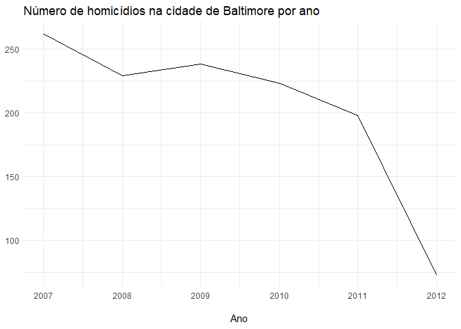
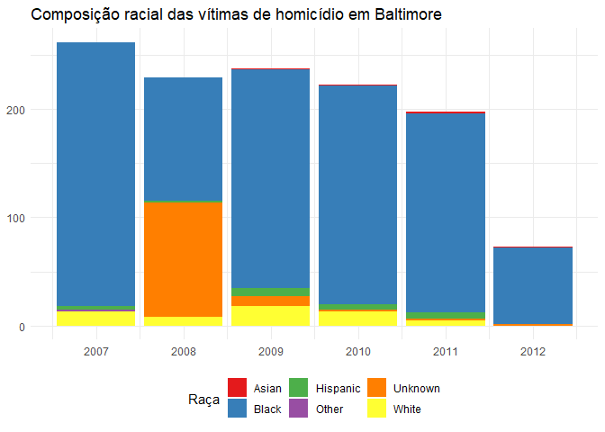
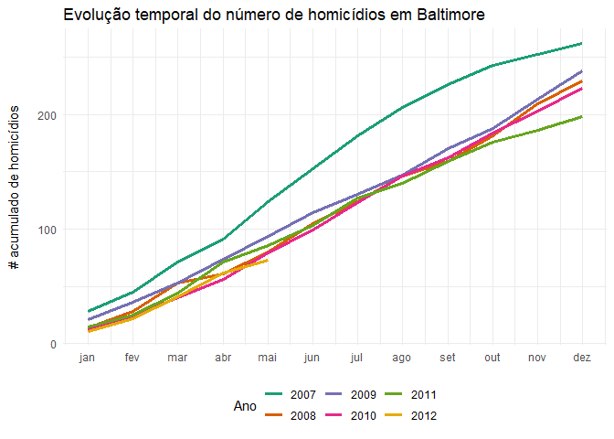
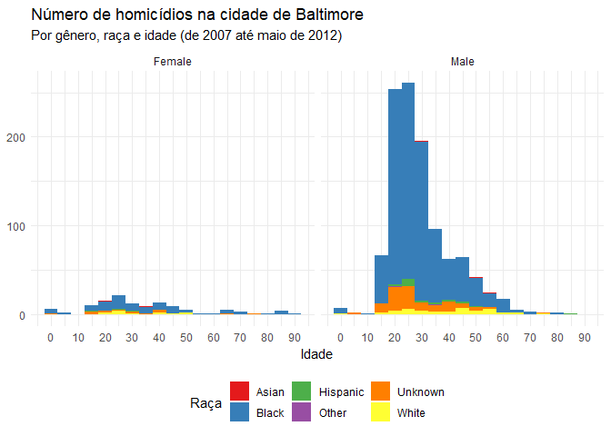
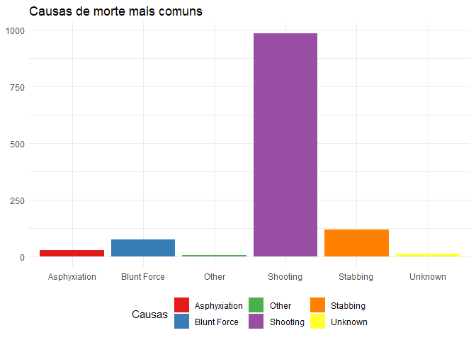
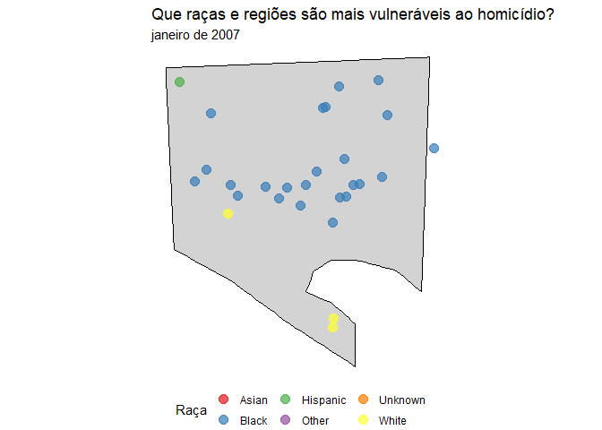
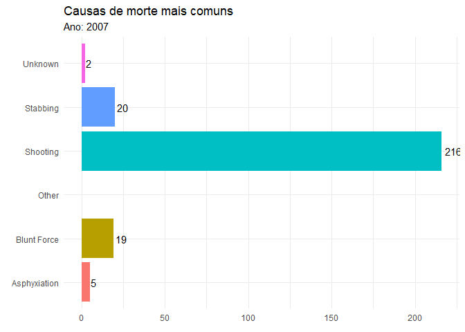
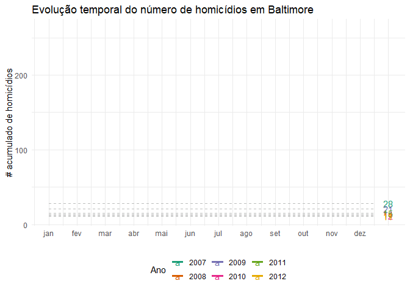

Homicídios em Baltimore: visualizações com ggplot2 e gganimate
Neste post pretendo continuar o que foi iniciado no último, onde transformamos dados contidos em texto em um data.frame, um formato muito mais amigável para a exploração e visualização de dados no R.
O procedimento geral agora, com os dados já limpos, é transformá-los e fazer a visualização que queremos. Daí o uso extensivo do tidyverse antes de chamar o ggplot2.
Ok, vamos primeiro olhar para a nossa base de dados e ver que perguntas gostaríamos de responder:
library(tidyverse)
df <- read_csv("https://raw.githubusercontent.com/phelipetls/phelipetls.github.io/master/assets/homicides_df.csv") %>%
na.omit()
df %>% head()
## # A tibble: 6 x 8
## causas lon lat raca genero idade data endereco
## <chr> <dbl> <dbl> <chr> <chr> <dbl> <date> <chr>
## 1 Shooting -76.7 39.3 Black Male 17 2007-01-01 3400 Clifton Ave.
## 2 Shooting -76.7 39.3 Black Male 26 2007-01-02 4900 Challedon Ro~
## 3 Blunt Force -76.6 39.3 Black Female 44 2007-01-02 2000 West North A~
## 4 Asphyxiation -76.6 39.4 Black Male 21 2007-01-03 5900 Northwood Dr~
## 5 Blunt Force -76.6 39.2 White Male 61 2007-01-05 500 Maude Ave.
## 6 Shooting -76.6 39.4 Black Male 46 2007-01-05 5200 Ready Ave.
Há diversas questões a serem exploradas aqui, a primeira e mais sensível que vem a mente é a racial: quais raças costumam ser vítimas de homicídio? Vamos, naturalmente, estar interessados também na mesma pergunta para diferentes características das pessoas, como gênero, idade etc. e como elas se relacionam umas com as outras. Por exemplo, será que mulheres negras acabam vítimas de homicídios muito mais que as brancas?
Os dados nos possibilitam também enxergar a distribuição geográfica, que áreas da cidade são as mais violentas etc.
E, por fim, é interessante visualizar como o número de vítimas evolui no tempo. Será que vem declinando com o passar dos anos?
Evolução do número de vítimas no tempo #
Esse é um bom ponto para se começar a entender os dados. Vamos fazer essa visualização com um gráfico de linhas:
library(lubridate)
# configurando o tema
theme_set(theme_minimal())
theme_update(legend.position = "bottom")
# criando a variável pro ano
df <- df %>%
mutate(ano = year(data))
df %>%
count(ano) %>%
ggplot(aes(
x = ano,
y = n
)) +
geom_line() +
labs(
x = "\nAno", y = NULL,
title = "Número de homicídios na cidade de Baltimore por ano"
)

Ok, uma boa notícia, parece que o número de homicídios vem reduzindo com os anos…
Exceto por essa queda brusca em 2012, que deveria gerar suspeitas. De fato, essa queda será esclarecida por outra visualização mais adiante. Se desconsiderarmos 2012, o quadro da violência não parece apresentar melhoras tão significativas.
É interessante visualizar também como isso se deu para as diferentes raças:
df %>%
# contagem dos casos por raça e ano
count(raca, ano) %>%
ggplot(aes(
x = ano,
y = n,
fill = raca
)) +
geom_col() +
labs(
x = NULL, y = NULL,
title = "Raça das vítimas de homicídios em Baltimore"
) +
scale_fill_brewer(palette = "Set1", name = "Raça") +
scale_x_continuous(breaks = 2007:2012)

Essa é a primeira visualização do que já era esperado: na cidade de Baltimore, a violência afeta muito mais os negros do que a qualquer outra raça. Impressiona a magnitude da desigualdade.
Um gráfico interessante que vi aqui , foi o do crescimento acumulado do número de vítimas por mês para cada ano, que tentei replicar abaixo:
acumulado <- df %>%
mutate(mes = month(data)) %>%
count(ano, mes) %>%
group_by(ano) %>%
mutate(soma_cumulativa = cumsum(n)) %>%
na.omit() %>%
ggplot(aes(
x = mes,
y = soma_cumulativa,
color = factor(ano),
group = ano
)) +
scale_color_brewer(palette = "Dark2") +
labs(
x = NULL,
y = "# acumulado de homicídios\n",
title = "Evolução temporal dos homicídios em Baltimore",
color = "Ano"
) +
geom_line(size = 1.2) +
scale_x_continuous(
breaks = 1:12,
labels = month(df$data, label = T) %>% levels()
)
acumulado

E aqui fica claro o porquê da queda em 2012: não temos os dados de todos os meses. Também salta aos olhos que a violência diminuiu em relação a 2007, mas se manteve mais ou menos estável no resto do período.
Aspectos sociais das vítimas #
Vamos tentar visualizar agora como a violência afeta as pessoas de diferentes grupos:
df %>%
ggplot(aes(idade)) +
geom_histogram(aes(fill = raca),
binwidth = 5
) +
facet_grid(. ~ genero) +
scale_fill_brewer(palette = "Set1") +
labs(
x = "Idade", y = NULL,
fill = "Raça",
title = "Número de homicídios na cidade de Baltimore",
subtitle = "Por gênero, raça e idade (de 2007 até maio de 2012)"
) +
scale_x_continuous(breaks = seq(0, 100, 10))

E assim podemos ver que o mais afetado pela violência é o homem negro da faixa dos 20-30 anos. Se olharmos bem, pode-se também observar que a mulher negra está em posição mais vulnerável à violência que a branca, provavelmente porque vive nas regiões onde a violência é maior.
Também impressiona o contraste entre os números para cada gênero. Os homens são muito mais propensos a serem mortos violentamente.
Que causa de morte é a mais comum? #
Para ver quais são as causas mais comuns, vamos fazer um simples gráfico de barras:
df %>%
ggplot(aes(
x = causas,
fill = causas
)) +
geom_bar() +
labs(
x = NULL, y = NULL,
fill = "Causas",
title = "Causas de morte mais comuns"
) +
scale_fill_brewer(palette = "Set1")

Os homicídios por armas de fogo são de longe os mais comuns, seguido por esfaqueamento e contusão.
Mapas e animações #
Para visualizar a distribuição geográfica da ocorrência de homicídios, temos que
primeiro plotar o mapa da cidade. O código abaixo mostra como fazer isso, com a
ajuda do dataset county do pacote maps, de onde extraímos as coordenadas
geográficas, para depois plotar com geom_polyon().
Uma vez com o mapa, minha ideia foi criar uma animação para visualizar o aspecto
temporal, espacial e qualitativo (nesse caso, pela raça das vítimas) com um
único gráfico. Para isso, vamos usar a função gganimate::transition_manual, de
forma a mostrar por mês o crescimento no número de vítimas:
library(gganimate)
# mapa de baltimore city
baltimore_map <- map_data("county") %>%
filter(subregion == "baltimore city") %>%
ggplot(aes(long, lat, group = group)) +
geom_polygon(fill = "lightgray", color = "black") +
coord_map() +
theme_void() +
theme(legend.position = "bottom")
# criando variável para cada mês de cada ano
df <- df %>%
arrange(data) %>%
mutate(ano_mes = format(data, "%B de %Y"))
# criando a animação
anim <- baltimore_map +
geom_point(
data = df,
aes(lon,
lat,
group = ano_mes,
color = raca
),
size = 3.5, alpha = .7
) +
labs(
title = "Que raças e regiões são mais vulneráveis ao homicídio?",
subtitle = "{ current_frame }",
color = "Raça"
) +
scale_color_brewer(palette = "Set1") +
transition_manual(factor(ano_mes, # ordernando os meses
levels = unique(ano_mes)
),
cumulative = T
)
# desacelerando a animação (padrão é 10fps)
animate(anim, fps = 5)

Fica evidente daí como a violência é concentrada em certos bairros.
Outra ideia é visualizar a evolução dos homicídios no tempo, por causa de morte.
Para isso, vamos usar ot gganimate::transition_states, para visualizarmos as
mudanças ocorridas no decorrer dos anos.
df %>%
count(ano, causas) %>%
ggplot(aes(
x = causas,
y = n,
fill = causas
)) +
geom_col(show.legend = F) +
geom_text(aes(
label = paste0("", round(n)),
hjust = -0.2
)) +
coord_flip() +
labs(
x = NULL, y = NULL, fill = NULL,
title = "Causas de morte mais comuns",
subtitle = "Ano: { closest_state }"
) +
transition_states(ano)

E que tal animarmos aquele gráfico do número acumulado? Vamos usar o
gganimate::transition_reveal() para revelar ao longo do eixo do tempo como os
números crescem.
acumulado +
geom_segment(aes(
xend = 12.5,
yend = soma_cumulativa
),
linetype = 2, color = "grey"
) +
geom_text(aes(x = 13, label = paste0("", soma_cumulativa))) +
transition_reveal(mes)

Conclusões #
Este post é certamente só uma amostra do pontecial do combo ggplot2 + gganimate, talvez uma das maiores vantagens de se usar o R, e espero que te ajude a criar as suas próprias visualizações, apesar de não ter sido exatamente o intuito ser didático.
O gganimate é bem novo ainda e tem relativamente pouca informação sobre na internet. Eu demorei bastante para fazer alguns desses gráficos, mas acho que o resultado valeu a pena.
Para aprender mais sobre ggplot2, tente este cookbook é ótimo. Para maiores referências sobre animações, tente o respositório learngganimate , esse vignette ou o próprio site do pacote .